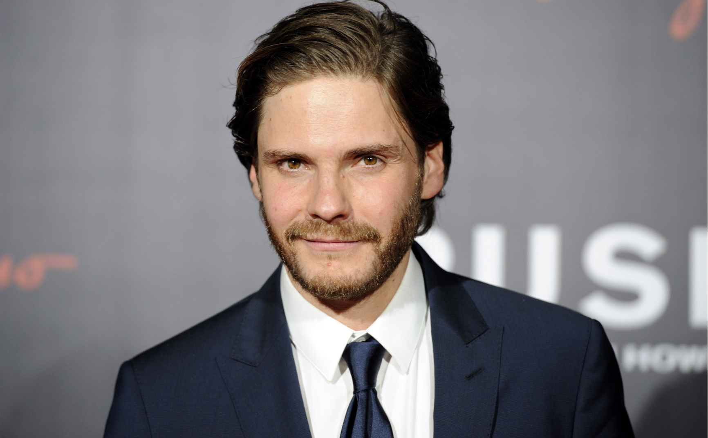

Sixty years after fleeing Vienna, Maria Altmann (Helen Mirren), an elderly Jewish woman, attempts to reclaim family possessions that were seized by the Nazis. Among them is a famous portrait of Maria's beloved Aunt Adele: Gustave Klimt's "Portrait of Adele Bloch-Bauer I." With the help of young lawyer Randy Schoeberg (Ryan Reynolds), Maria embarks upon a lengthy legal battle to recover this painting and several others, but it will not be easy, for Austria considers them national treasures.
| Actor | Picture | Role | Information |
|---|---|---|---|
| Helen Mirren | Maria Altmann | Maria Altmann was an Austrian-American Jewish refugee from Austria, which at that time was occupied by the Nazis. She is noted for her ultimately successful legal campaign to reclaim from the Government of Austria five family-owned paintings by the artist Gustav Klimt stolen by the Nazis during World War II. | |
| Ryan Reynolds | Randy Schoenberg | E. Randol Schoenberg is a U.S. attorney and genealogist, based in Los Angeles, California, specializing in legal cases related to the recovery of looted or stolen artworks, particularly those by the Nazi regime during the Holocaust. | |
| Daniel Bruhl |  | Hubertus Czernin | Hubertus Czernin was born in Vienna on 17 January 1956 to Felix Theobald Paul Anton Maria Czernin von und zu Chudenitz (1902–1968) and his wife Franziska née von Mayer-Gunthof (1926–1987), he helped expose the Nazi past of former United Nations Secretary-General and Austrian President Kurt Waldheim. |
Curtis began his career working at the Royal Court Theatre.His first job was assistant director to Caryl Churchill's Top Girls. He later became assistant director to both Danny Boyle and Max Stafford-Clark. Notable theatre productions Curtis has worked on include the world premiere of Road, A Lie of the Mind, Roots, Dinner with Friends and The Rise and Fall of Little Voice. In 2010, Curtis directed Serenading Louie at the Donmar Warehouse. Curtis directed the BBC's adaptation of Elizabeth Gaskell's Cranford in 2007. In June 2009, Curtis directed two new episodes of Cranford for the Christmas period. Titled Return to Cranford, the episodes were aired from 20 December 2009. In 2004, Curtis approached producer David Parfitt about making a film based on The Prince, The Showgirl and Me and My Week with Marilyn; two diary accounts written by Colin Clark about his time with Marilyn Monroe. Adrian Hodges wrote and adapted the screenplay for the film called My Week with Marilyn. Curtis and Parfitt went to BBC Films and the UK Film Council and they put up the money for development.[11] Curtis then approached Harvey Weinstein who financed the film.[12] My Week with Marilyn was filmed in late 2010 and released in November 2011.